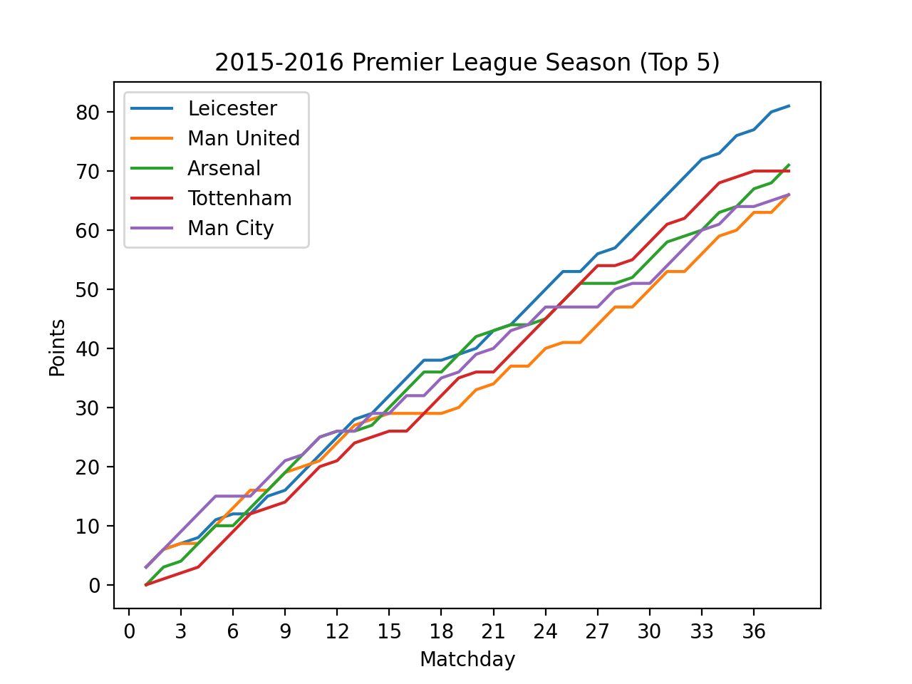

I wanted to analyze data on one of the greatest sports season of all time, the Premier League 15/16 season. Leicester City, in their second season back in the league, won the title for the club's first time. The path towards the title was not easy, top teams fought every matchday for first place. To analyze this battle, I looked through every matchday, calculated the top five team's total points after each matchday, and combined them into a scatterplot.
I drew from datahub.io
The data set was approximately 102kb in size encoded as a .csv files. I read the files line by line and stored the Home Team's name, Away Team's name, and the Winner or each game in a list. I then stored the team's name as the first element of each row in a two-dimmensional
with open('/Users/simonneuwirth-stein/Desktop/season-1516.csv', 'r') as csvfile:
# creating a csv reader object
csvreader = csv.reader(csvfile)
for row in csvreader:
keys.append([row[2], row[3], row[6]]) #(Home Team, Away Team, Winner)
#list of clubs
if row[2] not in clubs:
clubs.append(row[2])
#taking out header
clubs.pop(0)
ary = []
#inserting the club name as the first element in each row of the array
for i in range(len(clubs)):
ary.insert(i, [clubs[i]])
ary[i].append(0)
I then looped through each game played throughout the season, aka list "keys". I added 3 to the Home Team's previous points in the row into the two-dimmensional array if they won, 0 if they lost, and 1 if they tied. And vice versa for the Away Team.
for match in keys: #[Home Team, Away Team, Winner]
for i in range(len(ary)): #running through all of the 2d-array of team
#Home team
if ary[i][0] == match[0]: # if selected team is Home Team in match
if match[2] == "H":
ary[i].append(3 + ary[i][-1])
elif match[2] == "A":
ary[i].append(0 + ary[i][-1])
else:
ary[i].append(1 + ary[i][-1])
#Away team
if ary[i][0] == match[1]: # if selected team is Away Team in match
if match[2] == "A":
ary[i].append(3 + ary[i][-1])
elif match[2] == "H":
ary[i].append(0 + ary[i][-1])
else:
ary[i].append(1 + ary[i][-1])
['Bournemouth', 0, 0, 1, 4, 5, 6, 9, 10, 11, 12, 12, 13, 13, 14, 15, 18, 21, 24, 25, 26, 27, 27, 30, 31, 34, 34, 34, 35, 38 ...]
['Chelsea', 0, 1, 2, 5, 5, 6, 9, 10, 10, 13, 14, 14, 15, 18, 19, 19, 20, 23, 24, 25, 28, 29, 30, 33, 34, 35, 38, 41, 44, 45 ...]
['Everton', 0, 1, 4, 4, 5, 8, 9, 12, 13, 13, 14, 17, 18, 21, 22, 23, 24, 24, 27, 27, 28, 29, 30, 30, 33, 36, 36, 39, 39, 39 ...]
['Leicester', 0, 3, 6, 7, 8, 11, 12, 12, 15, 16, 19, 22, 25, 28, 29, 32, 35, 38, 39, 40, 41, 44, 45, 48, 51, 54, 55, 58, 59 ...]
['Man United', 0, 3, 6, 7, 8, 11, 14, 17, 18, 21, 22, 23, 26, 29, 30, 31, 32, 32, 33, 34, 37, 38, 41, 41, 44, 45, 46, 49, 52...]
['Norwich', 0, 0, 3, 4, 5, 8, 9, 10, 10, 11, 11, 12, 15, 16, 17, 18, 19, 22, 23, 26, 29, 30, 31, 31, 31, 32, 33, 34, 34, 35 ...]
['Arsenal', 0, 0, 3, 4, 7, 10, 11, 14, 17, 20, 23, 26, 27, 28, 29, 32, 35, 38, 39, 42, 45, 46, 47, 47, 48, 51, 54, 55, 55, ...]
['Newcastle', 0, 1, 2, 3, 3, 4, 4, 5, 6, 9, 10, 11, 14, 14, 15, 18, 21, 22, 22, 23, 24, 25, 28, 29, 30, 33, 34, 35, 35, 36. ...]
['Stoke', 0, 0, 1, 2, 2, 3, 4, 7, 10, 13, 13, 14, 17, 20, 21, 24, 25, 25, 28, 31, 32, 35, 36, 37, 38, 38, 41, 44, 47, 48, 48...]
['West Brom', 0, 0, 1, 1, 4, 5, 8, 8, 9, 12, 15, 15, 16, 19, 20, 21, 22, 22, 23, 26, 29, 30, 31, 32, 33, 34, 37, 40, 41, 44 ...]
['Aston Villa', 0, 3, 3, 4, 5, 6, 6, 7, 7, 8, 8, 9, 10, 11, 11, 12, 12, 13, 14, 15, 16, 19, 20, 21, 22, 25, 25, 26, 26, 27. ...]
['Southampton', 0, 1, 1, 2, 5, 6, 6, 9, 12, 13, 14, 17, 20, 20, 21, 22, 23, 23, 26, 27, 28, 31, 34, 37, 38, 41, 44, 44, 45. ...]
['Sunderland', 0, 1, 1, 2, 3, 3, 4, 5, 6, 7, 10, 11, 11, 14, 17, 18, 18, 19, 20, 20, 23, 26, 27, 28, 28, 29, 32, 33, 34, 35 ...]
['Swansea', 0, 1, 4, 5, 8, 9, 10, 11, 12, 12, 15, 15, 16, 17, 18, 18, 19, 20, 23, 24, 25, 25, 28, 31, 32, 33, 33, 34, 37, 40...]
['Tottenham', 0, 1, 2, 3, 4, 7, 10, 13, 14, 15, 18, 21, 22, 25, 26, 27, 27, 30, 33, 36, 37, 37, 40, 43, 46, 49, 52, 55, 56. ...]
['Watford', 0, 1, 2, 3, 4, 7, 10, 10, 11, 11, 14, 17, 18, 18, 21, 24, 27, 30, 31, 31, 31, 32, 33, 36, 37, 38, 41, 42, 43, 43...]
['West Ham', 0, 3, 3, 3, 6, 9, 12, 13, 14, 17, 20, 21, 22, 23, 24, 25, 26, 27, 28, 31, 34, 37, 38, 39, 42, 43, 44, 47, 50 ...]
['Crystal Palace', 0, 3, 3, 6, 9, 9, 10, 13, 16, 16, 17, 18, 21, 21, 24, 25, 28, 31, 32, 33, 33, 34, 35, 35, 35, 36, 36, 37 ...]
['Man City', 0, 3, 6, 9, 12, 15, 15, 16, 19, 22, 23, 26, 27, 27, 30, 31, 34, 35, 38, 39, 42, 43, 46, 47, 50, 50, 50, 51, 54,...]
['Liverpool', 0, 3, 6, 7, 7, 8, 9, 12, 13, 14, 15, 18, 18, 21, 24, 25, 26, 27, 30, 33, 34, 35, 35, 38, 39, 40, 43, 46, 49, ...]
I decided to only plot the top 5 teams because with all the team in it, it became too complicated to analyze
# libraries
import matplotlib.pyplot as plt
import numpy as np
import pandas as pd
x = np.arange(1, 39) #start x, end x | do not change
xtix = [i for i in range(39)]
#ytix = [i for i in range(39)]
plt.xticks(xtix[: :3])
#plt.yticks(hate[: :3])
#Plot
top_5 = ["Leicester", "Arsenal", "Tottenham", "Man City", "Man United"]
for i in range(len(ary)):
if ary[i][0] in top_5:
plt.plot(x, np.array(ary[i][2:]), label = ary[i][0])
# Add Title
plt.title("2015-2016 Premier League Season (Top 5)")
# Add Axes Labels
plt.xlabel("Matchday")
plt.ylabel("Points")
# Display
plt.legend()
plt.show()
I'm pleased with how it turned out, and offer a few thoughts.